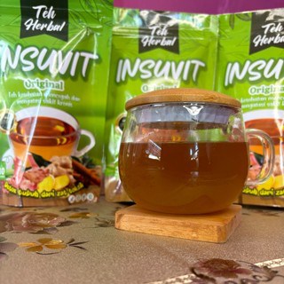
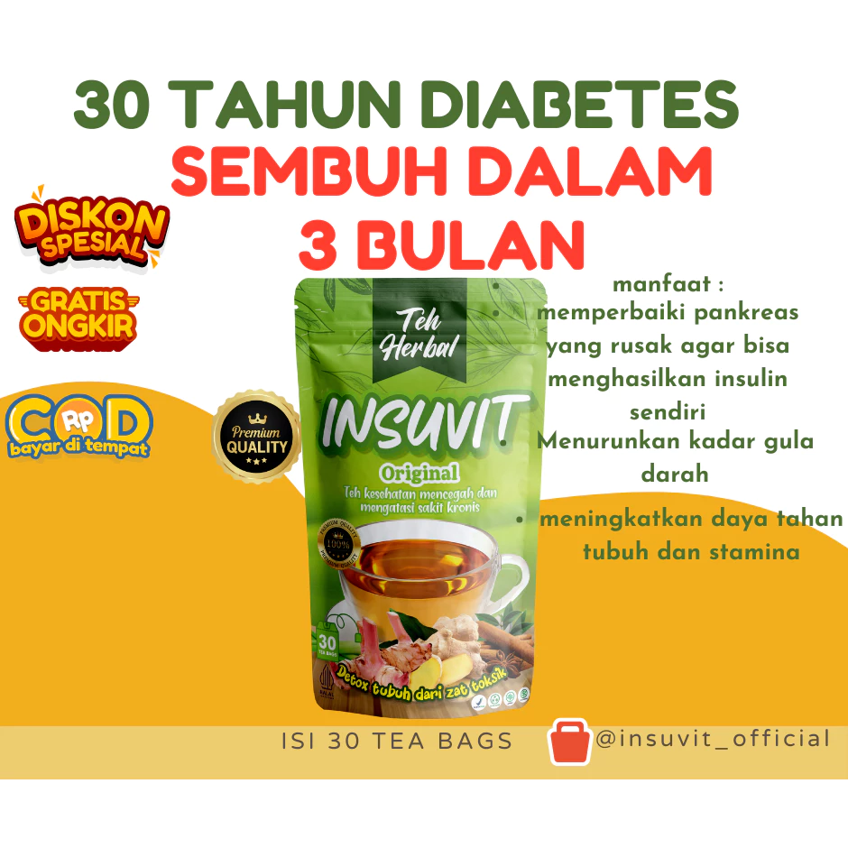
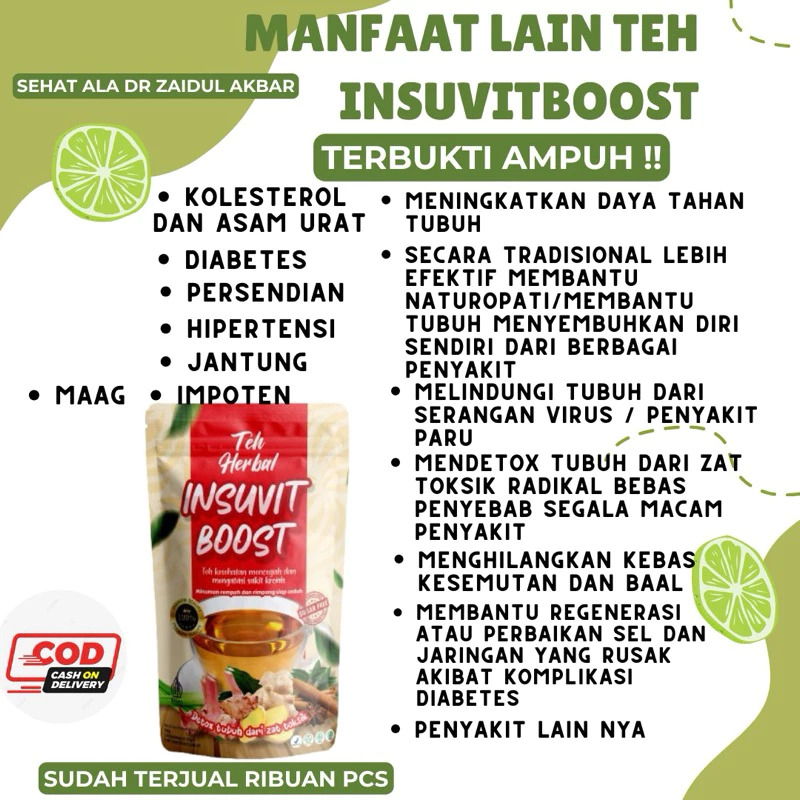
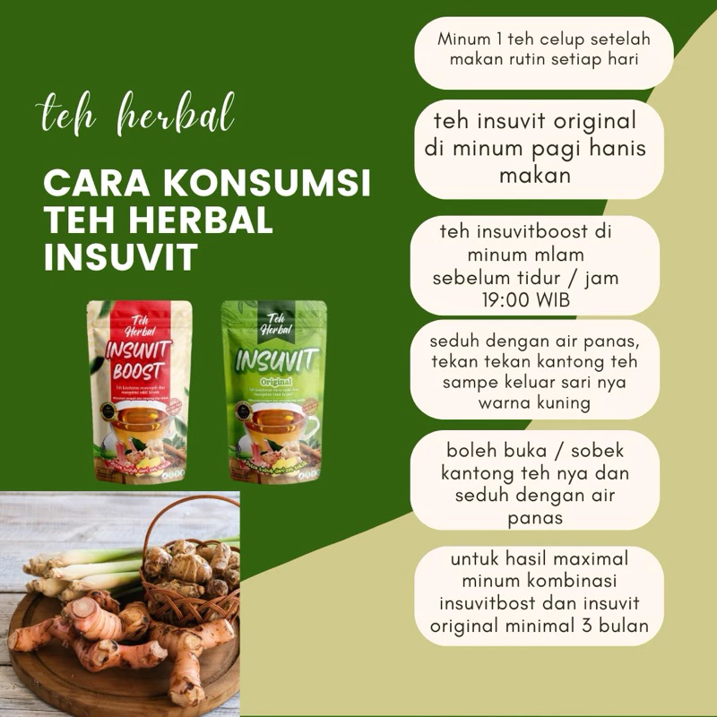
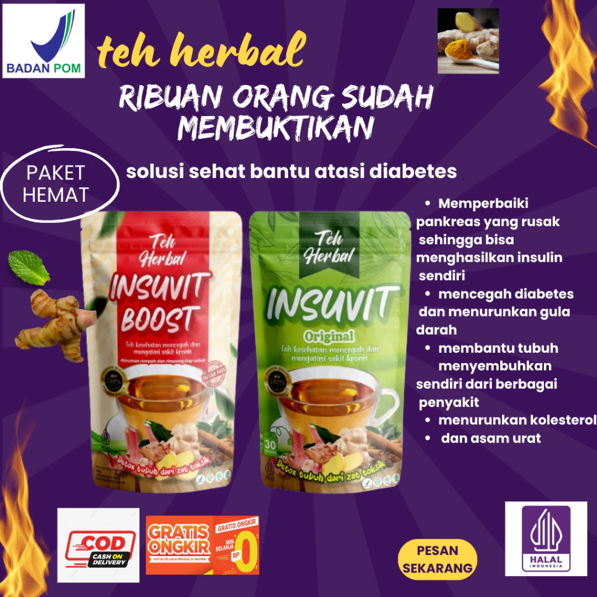

Sehat Tanpa Obat Kimia
UMKM teh herbal berbahan tumbuhan alami yang hadir untuk mendukung gaya hidup sehat, terutama bagi masyarakat yang peduli pada keseimbangan metabolisme dan kadar gula darah. Website ini menjadi pusat informasi resmi; pembelian tetap diarahkan ke toko Insuvit di Shopee.

Kebutuhan informasi, kepercayaan, dan kemudahan transaksi yang ditemukan dari hasil wawancara owner
Masalah: Sulit menemukan informasi resmi produk di internet karena informasi tersebar di media sosial dan marketplace.
Dampak: Konsumen merasa ragu dan kurang percaya terhadap keaslian brand.
Solusi Insuvit: Website ini menjadi identitas digital dan pusat informasi resmi UMKM Insuvit agar calon konsumen mudah mengenal brand.
Masalah: Banyak orang enggan mengonsumsi herbal karena repot menyiapkan dan merebus bahan herbal sendiri.
Dampak: Gaya hidup sehat dengan herbal menjadi sulit dipertahankan secara rutin.
Solusi Insuvit: Menghadirkan produk herbal dalam bentuk teh celup yang praktis diseduh sesuai petunjuk konsumsi.
Masalah: Konsumen lebih percaya menyelesaikan transaksi melalui marketplace.
Dampak: Website checkout mandiri berisiko tidak sesuai dengan kebiasaan pembelian konsumen.
Solusi Insuvit: Pembelian produk 100% diarahkan ke toko resmi di marketplace terpercaya, terutama Shopee.
Masalah: Banyak herbal beredar tanpa kejelasan keamanan dan izin edar.
Dampak: Risiko efek samping dan keraguan atas kelayakan konsumsi jangka panjang.
Solusi Insuvit: Transparansi P-IRT, bahan alami, kontak resmi, dan catatan kesehatan secara terbuka di website.
Website ini secara khusus berfungsi sebagai pusat informasi dan branding resmi Insuvit Teh Herbal, bukan sebagai tempat checkout atau transaksi langsung. Seluruh proses pembelian tetap diarahkan ke marketplace resmi seperti Shopee agar alur transaksi sesuai dengan kebiasaan konsumen dan kebutuhan owner.
Mendukung Gaya Hidup Sehat
Insuvit Teh Herbal adalah UMKM yang memproduksi minuman teh herbal berbahan tumbuhan alami. Brand ini dikembangkan untuk membantu masyarakat menjaga pola hidup sehat dan keseimbangan metabolisme tubuh secara alami sebagai pelengkap kebiasaan hidup sehat.
Latar belakang hadirnya Insuvit berangkat dari meningkatnya perhatian masyarakat terhadap masalah gula darah dan kebutuhan produk herbal yang lebih praktis. Karena itu, Insuvit menghadirkan teh celup herbal yang mudah diseduh, terjangkau, dan mengangkat bahan tumbuhan lokal.
Website ini dibuat sebagai pusat informasi resmi Insuvit Teh Herbal. Pembelian tetap diarahkan ke marketplace resmi seperti Shopee agar konsumen merasa lebih aman dalam bertransaksi.
Langkah UMKM kami dalam menjangkau masyarakat luas
Mulai pemasaran melalui Facebook Ads Manager dan Instagram.
Mulai masuk ke Shopee dan TikTok, dengan Shopee menjadi kanal penjualan utama.
Mengembangkan website branding sebagai pusat informasi resmi dan media penguat kepercayaan calon konsumen.
Nilai utama yang membedakan Insuvit
Mengandalkan bahan tumbuhan alami berdasarkan informasi owner, serta dilengkapi P-IRT yang tercantum pada deskripsi produk Shopee.
Diformulasikan untuk membantu menjaga kadar gula darah dan kesehatan metabolisme dengan komunikasi manfaat yang tetap hati-hati.
Kemasan teh celup gampang dipakai kapan saja, dengan harga marketplace yang terjangkau untuk konsumsi rutin.
Insuvit hadir sebagai pendukung pemeliharaan kesehatan, bukan sebagai pengganti obat medis atau konsultasi tenaga kesehatan.
Contoh produk yang tersedia di toko Shopee resmi Insuvit

Tersedia di ShopeeVarian original teh celup herbal yang praktis diseduh untuk konsumsi rutin sesuai petunjuk produk.
Lihat di Shopee
Tersedia di ShopeeVarian herbal pendamping dalam format teh celup, mudah diseduh dan mengikuti aturan konsumsi pada kemasan.
Lihat di Shopee
Tersedia di ShopeePaket kombinasi untuk konsumen yang ingin mengikuti pola konsumsi pagi dan malam sesuai panduan produk.
Lihat di Shopee
Tersedia di ShopeePilihan bundling untuk persediaan konsumsi herbal, dengan informasi harga mengikuti toko resmi Shopee.
Lihat di Shopee*Harga, promo, jumlah produk, dan rating dapat berubah mengikuti data terbaru di toko Shopee resmi Insuvit.
"Praktis tinggal seduh, jadi tidak perlu repot menyiapkan bahan herbal sendiri."
"Pembelian terasa lebih aman karena diarahkan ke toko resmi di marketplace."
"Informasi produk, cara beli, dan kontak resmi jadi lebih mudah ditemukan."
Catatan: Testimoni asli dapat diganti dengan ulasan pembeli dari marketplace resmi Insuvit pada versi final.
Informasi P-IRT yang tercantum pada deskripsi produk Shopee adalah 5083202011298-29. Informasi halal tetap perlu diverifikasi kembali melalui dokumen resmi owner.
Konsumen disarankan membaca informasi produk, mengikuti petunjuk konsumsi, dan membeli melalui kanal resmi agar terhindar dari produk palsu.
Produk herbal bukan pengganti obat atau konsultasi medis, terutama bagi konsumen dengan kondisi kesehatan tertentu.
Insuvit adalah minuman teh herbal dari tumbuhan alami yang diformulasikan untuk mendukung gaya hidup sehat dan membantu menjaga keseimbangan metabolisme tubuh.
Target utama Insuvit adalah masyarakat umum di seluruh Indonesia yang peduli kesehatan dan ingin menjaga kebugaran serta kadar gula darah tetap stabil secara alami sebagai bagian dari gaya hidup sehat.
Informasi P-IRT yang digunakan pada prototype adalah 5083202011298-29 berdasarkan data produk di Shopee. Informasi halal dapat ditambahkan setelah dokumen resmi owner tersedia.
Tidak. Website ini berfungsi sebagai media informasi dan branding. Untuk keamanan serta kenyamanan transaksi, pembelian diarahkan ke toko resmi Insuvit di marketplace, terutama Shopee.
Insuvit aktif menggunakan Shopee sebagai kanal utama. Konsumen juga dapat menghubungi WhatsApp admin di +62 812-8534-0838 sebagai kontak pendukung.
Pada prototype akademik ini, pixel dan analytics belum diaktifkan. Integrasi Meta Pixel, Shopee Pixel, atau TikTok Pixel dapat dikembangkan pada tahap berikutnya dengan memperhatikan izin pengguna dan kebijakan privasi.
Tidak. Insuvit Teh Herbal bukan pengganti obat atau konsultasi medis. Produk ini diposisikan sebagai minuman herbal untuk mendukung gaya hidup sehat. Konsumen dengan kondisi kesehatan tertentu disarankan berkonsultasi dengan tenaga kesehatan.
Website ini berfungsi sebagai media informasi dan branding resmi Insuvit. Untuk transaksi pembelian, konsumen diarahkan ke toko resmi Insuvit di Shopee sebagai kanal utama.
TikTok dan Tokopedia belum dijadikan fokus utama pada prototype karena website memprioritaskan Shopee dan WhatsApp sebagai kanal resmi yang ditampilkan.